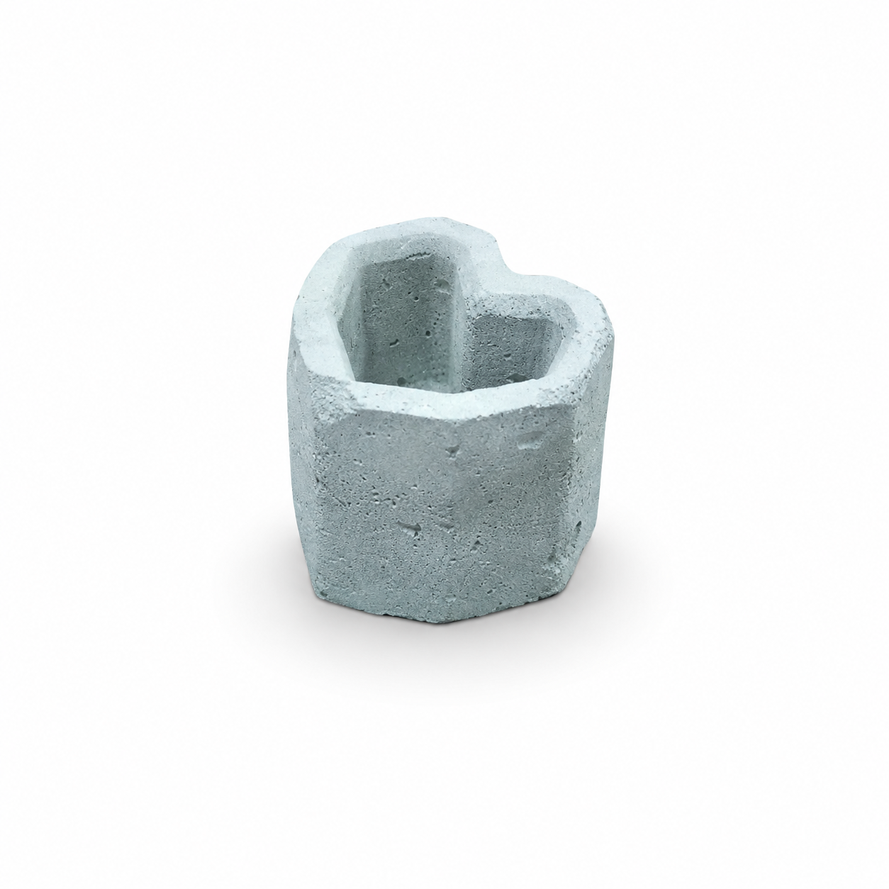

Este portavela fue elaborado de forma artesanal utilizando una mezcla de cemento moldeada en una pieza de diseño moderno y geométrico. Su forma original combina líneas rectas con una cavidad en forma de corazón, lo que le aporta un aspecto decorativo único y atractivo.
El objetivo de este proyecto es demostrar las posibilidades creativas del cemento como material para la fabricación de objetos decorativos y funcionales. A través de técnicas de moldeado y acabado, se logró obtener una pieza resistente, duradera y apta para el uso cotidiano.
Además de servir como soporte para velas, este portavela puede utilizarse como elemento decorativo en distintos ambientes, aportando un estilo minimalista y elegante. Su diseño busca combinar funcionalidad, creatividad y trabajo artesanal.
Con este trabajo se pretende destacar la importancia de la reutilización de moldes, la experimentación con materiales y el desarrollo de habilidades manuales, mostrando cómo es posible crear objetos útiles y estéticos mediante procesos simples y accesibles.